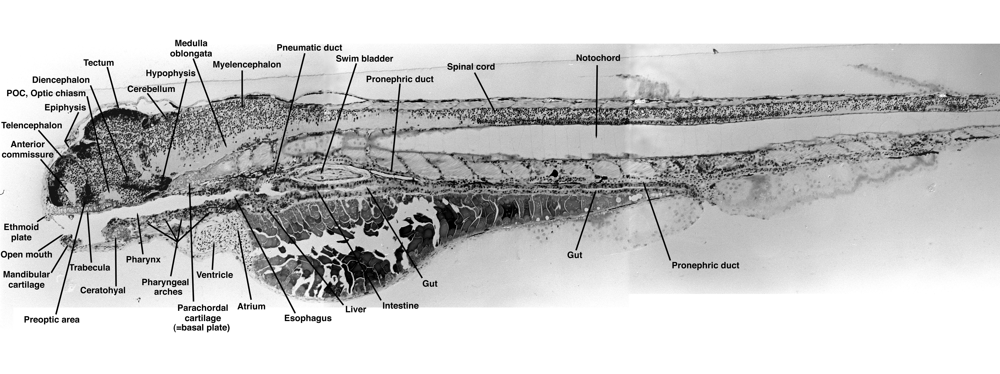

About Zebrafish
Zebrafish (Danio rerio) are commonly used in scientific research because they are small, develop quickly and their larvae are transparent. This makes it possible to observe internal structures such as the heart during early development. They are, therefore, very useful for toxicity assays (tests that evaluate the possible negative affects of a substance on the biological functions of an organism) as heart rate is a major indicator of overall health.
Conventional methods of measuring zebrafish heart rate tend to utilise anesthesia or physical restraint to keep the zebrafish still while the heart is imaged. However, sedation lowers heart rate and physical restraint can cause stress in the fish, which increases heart rate. Thus, both of these techniques introduce physiological changes that are likely to affect the accuracy of the results obtained. This project investigates an image analysis technique that could allow heart rate estimation from videos of freely swimming zebrafish larvae.

Side view showing the anatomy of a zebrafish larva.